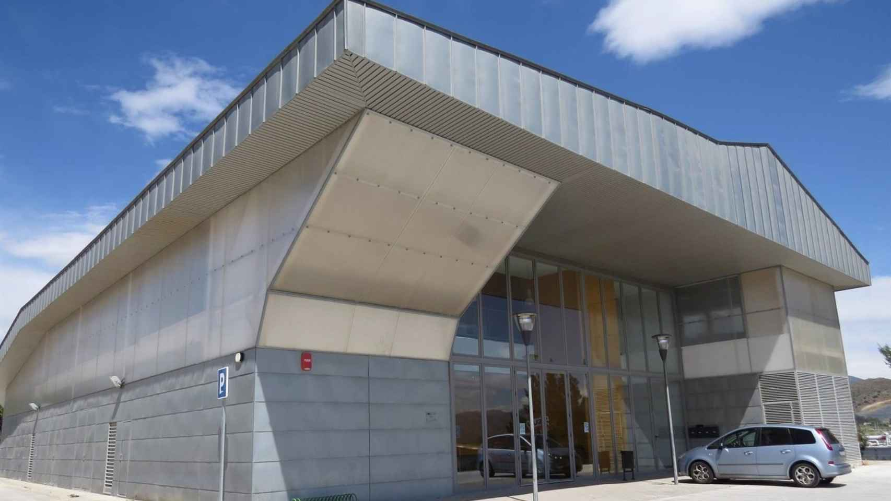

Sergio Dominguez Gomez
2º DAM
Alumno de 2º DAM CPIFP Nuevo 2022/2023.
Inmobiliary
App para Inmobiliarias
Inmobiliary, app desarrollada por Sergio Dominguez Gomez para gestionar las visitas de los clientes de la inmobiliaria con las casas disponibles.

CPIFP Nuevo
Centro de formacion
CPIFP Nuevo es un Centro Integrado situado en el Parque Tecnológico de Andalucía (PTA). Dispone de Los grados de la rama de Informática y Comunicaciones, así como los cursos de especialización. En pleno corazon del parque tecnológico rodeado por empresas del sector.